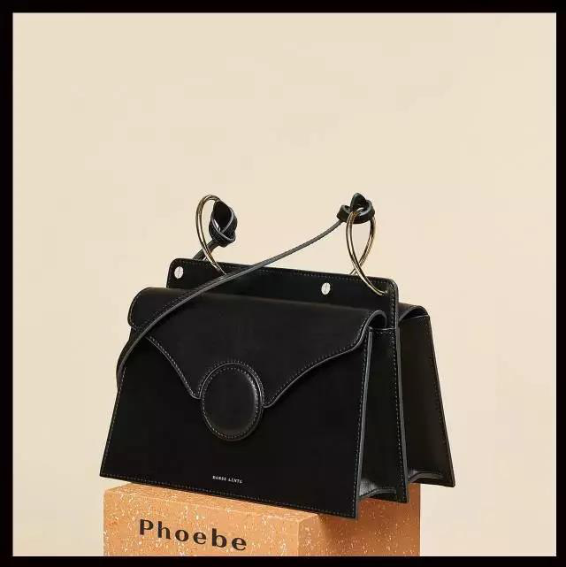
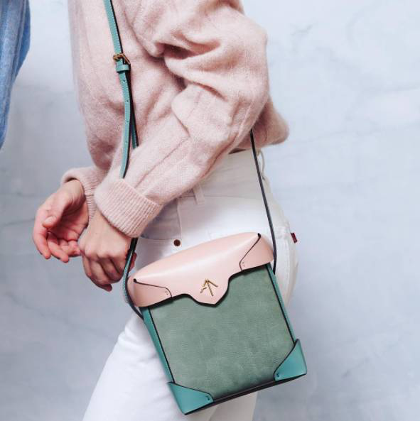

质感不输大牌的小众包
质感不输大牌的小众包，精致的猪猪女孩做起来
在满大街大牌包包横行的时代，每个人都想要突出自己的个性，不喜欢被模仿，总是追求精致有品位的包，那么这几款小众品牌的包就非常适合你了。


质感不输大牌的小众包
质感不输大牌的小众包，精致的猪猪女孩做起来
在满大街大牌包包横行的时代，每个人都想要突出自己的个性，不喜欢被模仿，总是追求精致有品位的包，那么这几款小众品牌的包就非常适合你了。
1.simon miller
simon miller的包是小编一直希望能推荐给老铁们的，它是近两年来非常火爆的一个品牌，一个来自纽约的男装品牌能把包做出自己的风格，并受到明星和时尚博主的欢迎，也是一种能力的体现，有多少人拜倒在Bonsai的门下。
这款Bonsai是simon miller其中的一个系列，因与盆栽长的非常像，所以有着“盆栽包”之称，自从Emma Watson开始背上后，名声大噪，充斥在各大秀场，秀场上推出的这款袖珍水桶包采用优质的小山羊皮，走的是近几年的极简， 性冷淡风，当下就成为模特和IT Bags爱不释手的一款。极简的桶身配上银色环装金属环，虽然迷你却毫不娇气，简约又别致，极具艺术气息。
2.Danse lente
当你看到英国设计师品牌Danse lente的其中一个系列PHOEBE的时候，你就知道情有独钟的含义是什么了，你是说它没有这么强大么，Danse lente是“漫舞”的意思，极具浪漫的情调，走极具简洁的几何路线，有着建筑学的踪影，整体的设计离不开建筑学。
PHOEBE的双色搭配，让这个包的整体看起来有着强烈的线条感，细节部分非常突出，包带与金属环之间的联系只有一个打结的距离，运用曲线金属链接包身与包带之间，两边是风琴褶构造，鲜明的配色让这款包成为断货王。
这款包的设计来源于意大利家居设计师Mario Milana，简约的造型，完美诠释着精细的工作，同时不失风趣。他们家还有其他系列的包也是非常有特点，但是小编极力推荐这一个系列，因为实在是卖的太好了。
3.J.W. Anderson
这个同样来自英国的服装品牌，创始人就是J.W. Anderson，这个80后的年轻设计师给我们带来的无尽的想象空间，他同时担任着Loewe的设计总监的职位，Loewe在近两年非常之火爆，从小象包到Puzzle Bag，蔓延整个世界，也是明星博主们的实宠。

而这个同名品牌的包在设计上更加极具个性，出众的便是牛魔王角包，极具特色的是在翻盖上的圆环，那是这款包的点睛之笔，如同牛魔王，这款包叫Pierce Bag，一经推出，就被一扫而空，除了纯色的以外还有不同的颜色拼接，虽然价格上有点小贵，但是攒攒钱还是能入手的。
4.Manu Atelier
对于Manu Atelier来说，这款包算是小众品牌中的网红啦，人气一直高涨不下，被称为箭头包的它在包包轮廓上就完胜了，这个土耳其品牌，设计感极强，曾被Vogue评选为当前最热的It Bag之一，像是圆柱筒一样的设计，更具特色，包外有个小箭头，个性突出，更适合有着鲜明个性的你~
无论多么有个性，都能够找到适合自己的那一款包，哪怕与世界为敌，还是可以轻松的做自己，知道自想要的是哪一款，做自己的女王。